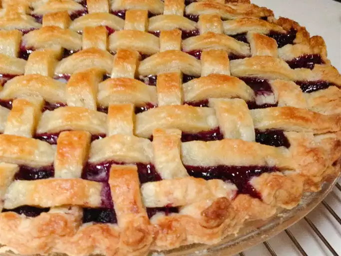

Blueberry Pie

Description
This blueberry pie recipe is not runny and has a mystery ingredient that
adds a nice twist. I came up with this tasty version while searching the
spice cupboard for nutmeg. My family loved it so much that I made two more
pies the next day! Serve with whipped cream or ice cream.
Ingredients
- 1 (14.1 ounce) package double-crust pie pastry, thawed
- 5 cups fresh blueberries (preferably wild)
- ½ cup white sugar
- ¼ cup all-purpose flour
- ½ teaspoon ground cinnamon, or more to taste
- ¼ teaspoon almond extract
- ¼ cup butter, cut into small pieces
- 1 tablespoon milk (Optional)
Steps
-
Preheat the oven to 375 degrees F (190 degrees C). Press 1 pie crust into
the bottom and sides of a 9-inch pie pan; set aside.
-
Stir together blueberries, sugar, flour, and cinnamon in a large bowl.
Add almond extract; stir to coat. Pour blueberry mixture into the prepared
pie crust.
-
Dot blueberry mixture with butter pieces. Top with second pie crust,
crimping the edges together to seal. Brush top crust with milk. Use a knife
to cut slits into the top crust for steam to escape while baking. Wrap the
edges of the pie with aluminum foil to avoid burning.
-
Bake in the preheated oven for 25 minutes. Remove foil; continue baking
until filling is bubbling and crust is browned, 20 to 25 more minutes. Cool
before serving.